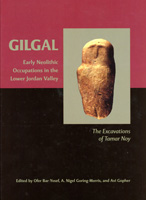

Ofer Bar-Yosef, A. Nigel Goring-Morris, and Avi Gopher
Gilgal: Early Neolithic Occupations in the Lower Jordan Valley (The Excavations of Tamar Noy)
Oakville CT: Oxbow Books, 2010
 |
The late Tamar Noy, who served as the Curator of Prehistory in the Israel Museum, surveyed, tested and excavated the Gilgal sites from 1973 until 1994. The study of the Gilgal sites holds monumental significance, because the features and artifacts uncovered there directly relate to the transition to agriculture in the Levant. The excavation produced various archaeological data that reflects this crucial socio-economic transition....This volume is a tribute to the consistent efforts and devotion of the late Tamar Noy, who continued the excavations and research of Gilgal over many years, often under harsh climactic conditions and with the help of numerous volunteers and some small donations. Copies may be ordered by contacting: |
| Back to Publications | Table of Contents |